İBB ULAŞIM KOORDİNASYON MÜDÜRLÜĞÜ
CBS Uzmanı (Eylül 2020 - )
Ulaşım Bilgi Sistemleri Şefliği Faaliyetlerinin Yürütülmesi
Ulaşım Bilgi Sistemi kurulması için gerekli altyapı ve mevcut durum analiz raporu hazırlanmıştır. Bu kapsamda Ulaşım Bilgi Sistemi Portalı kurulması ve gerekli analizler araçlarının tespiti için Ulaşım Daire Başkanlığı altındaki birimlerle görüşmeler yapılmış ve sistemdeki geliştirmelerin bu tespitlere göre yapılması sağlanmıştır. UTK Yönetimi için yazılım kurgusu ve süreçler ve hazırlanmış, Bilgi İşlem Müdürlüğü tarafından geliştirilen yazılımın bu süreçlere göre testleri yapılmıştır.
Ulaşım Bilgi Sistemi verileri İBB CBS Müdürlüğü Oracle Veritabanı üzerinde depolanmıştır. ArcGIS Desktop üzerinde düzenlemeler yapılmıştır. ArcGIS Enterprise Portal üzerinde WebAppbuilder ile oluşturulan sistem İBB ağı içerisinde kullanıma sunulmuştur. AutoCAD ile hazırlan Ulaşım Trafik Kurulu (UTK) projelerini veritabanına aktarabilmek için katman şablonu oluşturulmuş ve geliştirilen Model Builder ile sisteme aktarılmıştır. Bu verilerin takibi için ArcGIS Dashboard hazırlanmıştır.
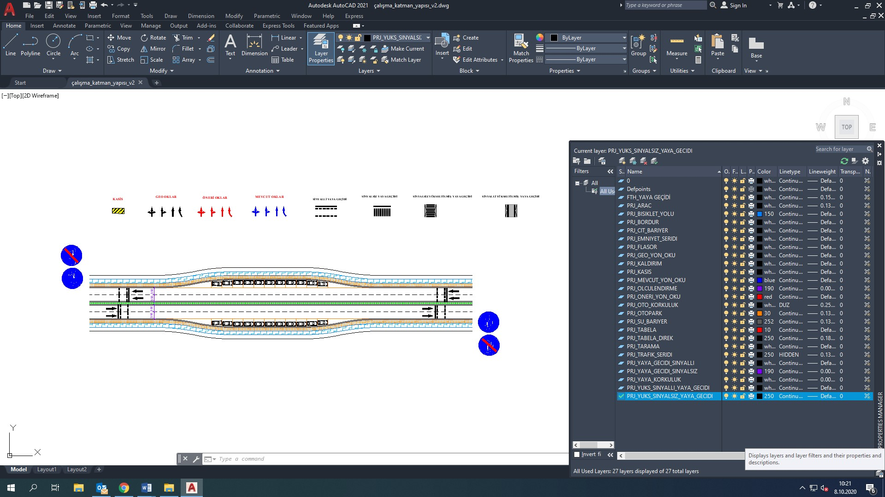
AutoCAD Proje Şablonu
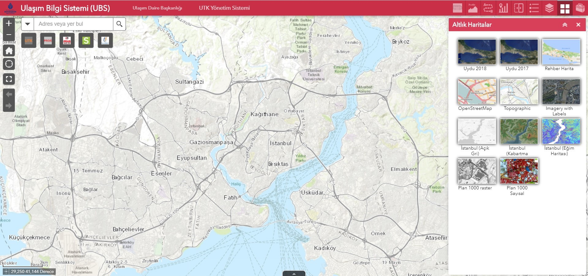
UBS Portal Görünüm
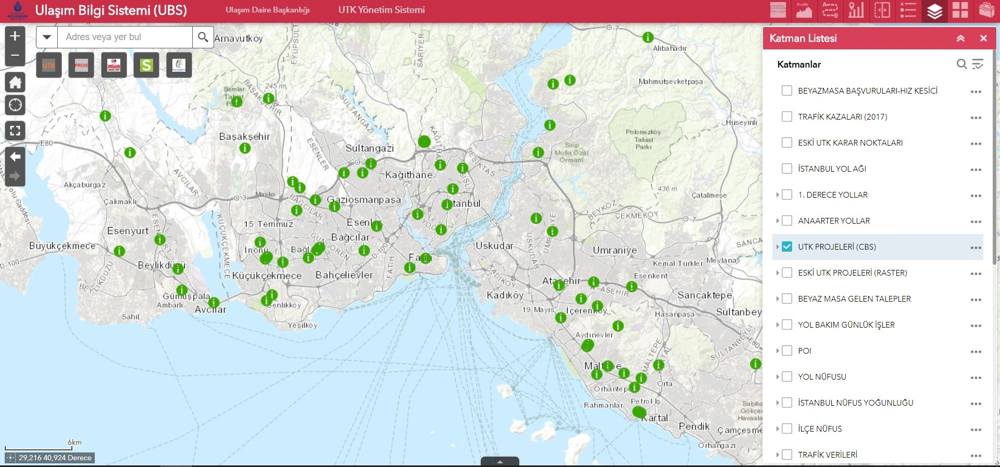
UBS Portal Katmanlar
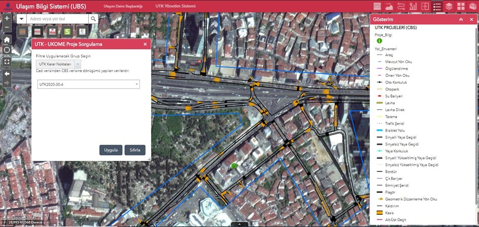
UBS Portal UTK Proje Görünümü
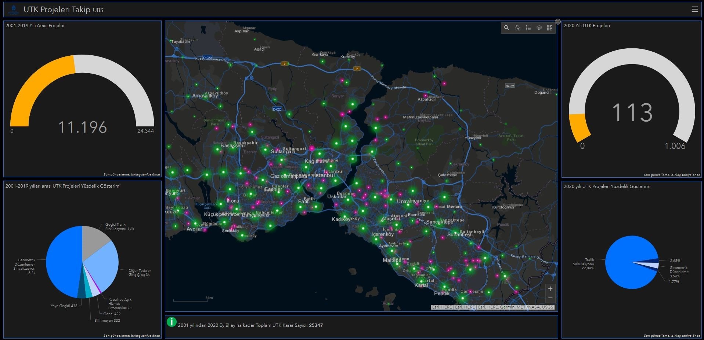
UBS Dashboard Görünümü
İSBAK A.Ş
CBS Uzmanı & Proje Yöneticisi ( Eylül 2016 – Eylül 2020)
İbb Coğrafi Bilgi Sistemi Müdürlüğü’ndeki Mevcut Coğrafi Veritabanının İşletilmesi Ve Yönetilmesi İle Kullanımda Olan Uygulama Programlarının Ve Web Servislerinin Bakımının Yapılmasına İlişkin Hizmet Alımı İşi
İş kapsamında İBB CBS Müdürlüğünde çalışan 79 personelin ihtiyacı olan eğitim, lisans, donanım, etkinlik taleplerinin gerçekleştirilmesini sağlayarak bütçe yönetimini yaptım.
KGM Görüntü Tabanlı Bilgi Yönetim Sistemi Oluşturulması İşi
Projede 96 bin km uzunluğundaki tüm karayolu ağının panoramik çekimi ve envanter sayısallaştırılması gerçekleştirilmiştir. Sahadan toplanan veriler Karayolları PostgreSQL sunucularından geliştirilen Bilgi Yönetim Yazılımına aktarılmıştır. Sistem üzerinden belirlenen 30 envanter türünün sayısallaştırması ve veri kontrolü yapılmıştır.
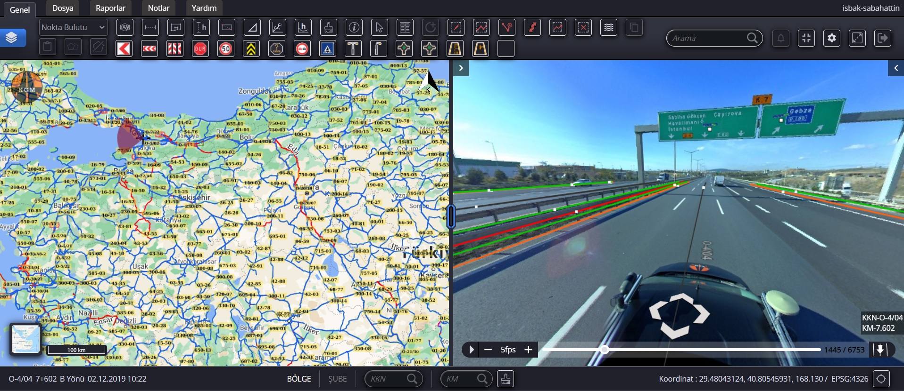
GTBYS Görünümü
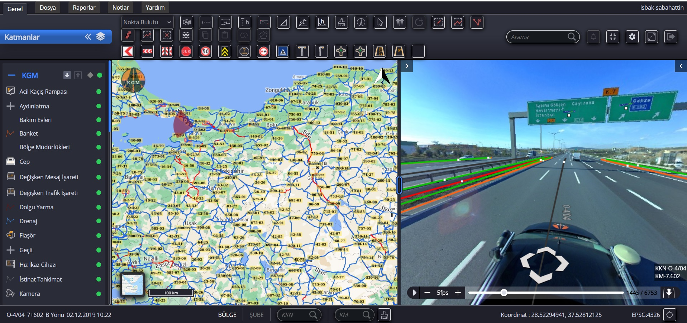
GTBYS Katman Görünümü
İBB Toplu Ulaşım Bilgi Sisteminin Oluşturulması, Veri Tabanının Düzenlenmesi Hizmet Alımı İşi
İş kapsamında el GPS cihazları ve koordinat kayıt eden kameralar ile İstanbul geneli tüm taksi durakları ve minibüs durakları tespiti, minibüs yolcu sayımı, taksi-dolmuş güzergâhlarının tespiti yapılmıştır. Saha üzerinden GPS ile toplanan bu bilgiler, ArcCatalog ile İBB Oracle veritabanı üzerinde veri modelleri oluşturulan veritabanına aktarılmıştır. İlişkisel yapıda kurulan veritabanı üzerinden Toplu Ulaşım Hizmetleri ihtiyaçlarına yönelik analizler (yoğunluk analizi, yakınlık analizi vb.) gerçekleştirilmiştir.
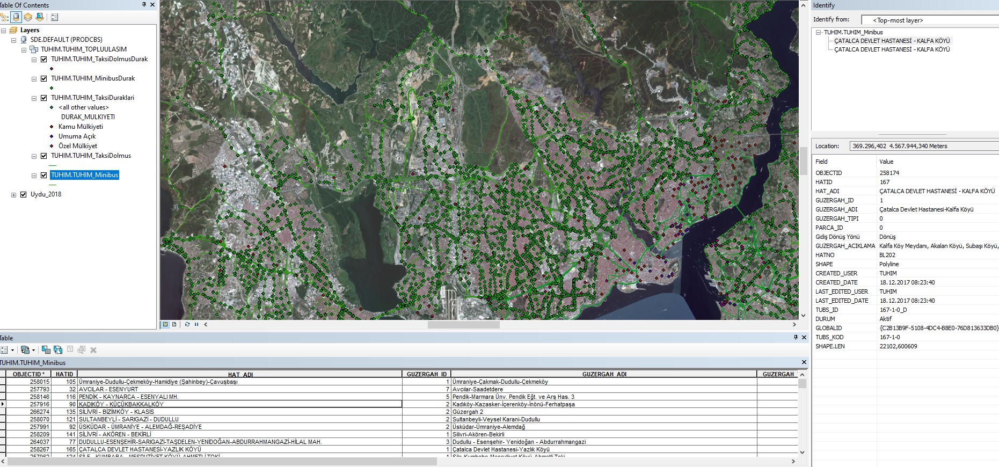
TUHİM Veri Görünümü
İBB Mezarlıklar Otomasyon Projesi İşi (Mebis)
İş kapsamında pilot olarak Karacaahmet ve Yeni Ayazağa Mezerlıklarının saha ölçümlerinin, mezarlık defter taramalarının yapılması ve bu verilerin İBB Oracle mekânsal veritabanı üzerinde hazırlanan veri modeline uygun ilişkisel olarak aktarılması yapılmıştır. Verilerin düzenlemeleri ArcGIS Desktop üzerinde yapılmıştır. Aynı zamanda geliştirilen MEBİS otomasyon sistemine aktarılan bu veriler tüm işlemlerin tek bir sayfa üzerinden yapılmasını sağlamaktadır.
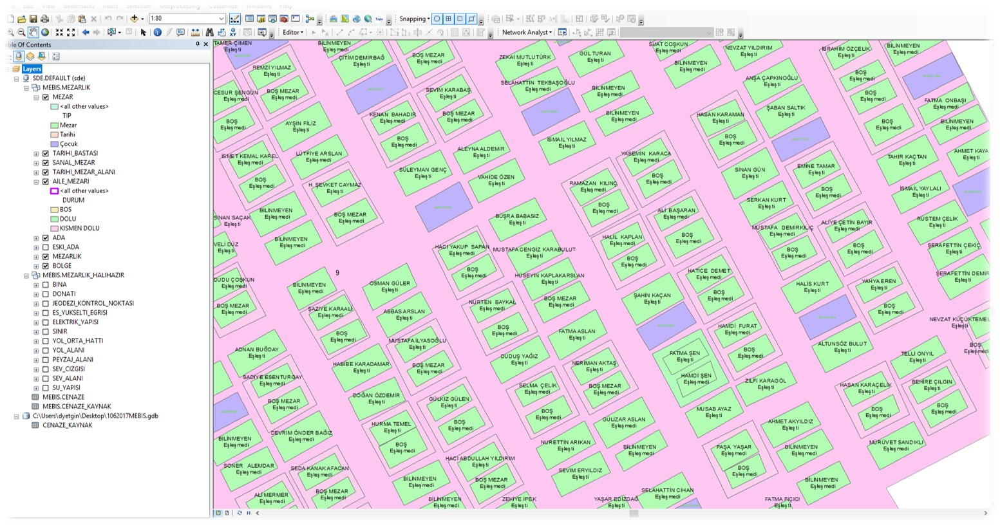
Mebis Veri Görünümü
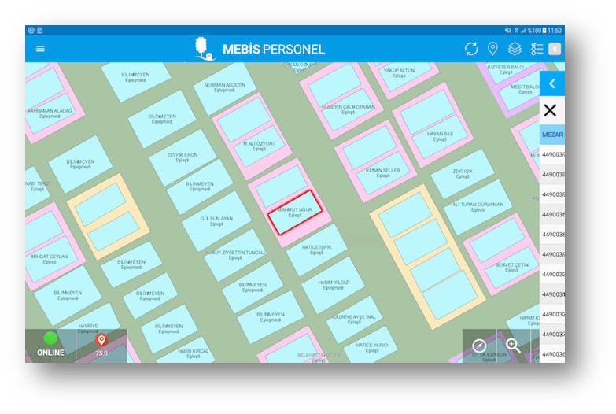
Mebis Personel Uygulaması Görünümü
KGM Sinyalize Kavşakların Tip Projelerinin Hazırlanması Hizmet Alımı İşi
İş kapsamında sinyalizasyon standart araştırmaları yapılmıştır. Sinyalize kavşaklar için ArcCatalog ile ilişkisel veri modeli oluşturulmuştur ve tip kavşaklar için örnek projeler hazırlanmıştır.
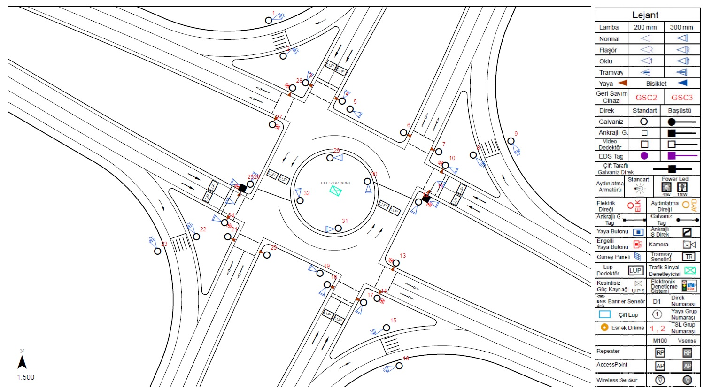
4 KOLLU ROTARY ADALI KAVŞAK ÜSTYAPI PROJESİ
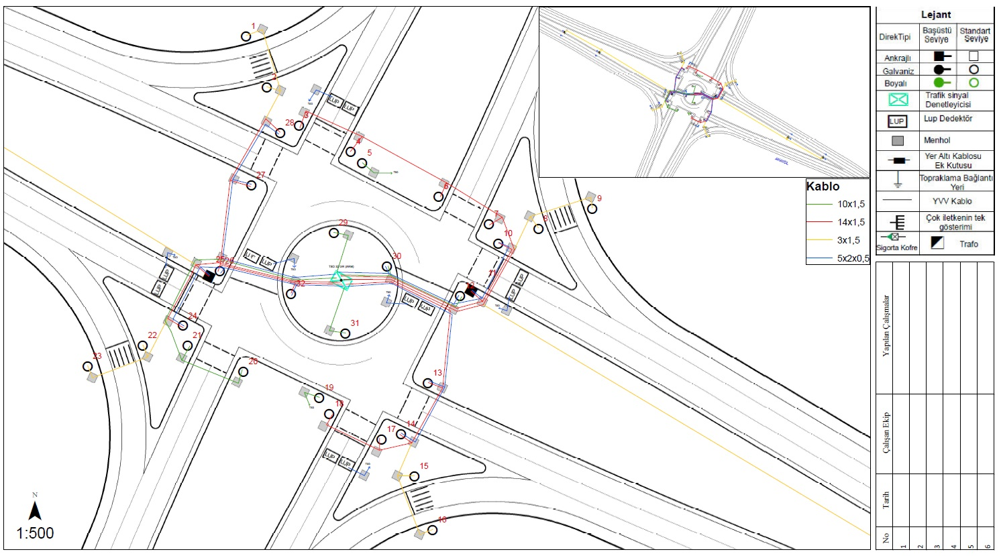
4 KOLLU ROTARY ADALI KAVŞAK ALTYAPI PROJESİ
İBB Elektronik Sistemler Müdürlüğü Haberleşme Altyapısının Tespiti İşi
İş kapsamında sahadan mobil uygulama ile toplanan verilerin ArcGIS Desktop üzerinde kontrolünde görev aldım.
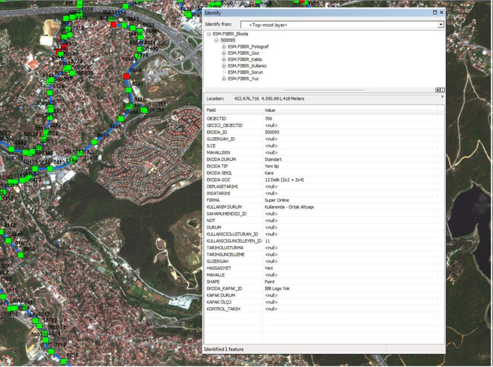
ESM Veri Görünümü
İSBAK Personel Servislerinin Optimizasyonu (2019 ve 2020 yılları için)
İSBAK personel servis güzergahları için optimum standartların belirlenmesinde ve güzergah optimizasyonun yapılmasında görev aldım. İş kapsamında personellerin yürüme mesafeleri kısaltılmış, engelli personellerin evlerinden alınması sağlanmış ve güzergah konforu arttırılmıştır.
Tüm personel konumları İSBAK MsSql üzerinde oluşturulan veri tabanına aktarılmıştır. Bu veriler ArcGIS Desktop üzerinde düzenlenmiştir. ArcGIS Online üzerinde güzergâh analizleri yapılarak en uygun rotalar belirlenmiştir ve ArcGIS Portal üzerinde WebAppbuilder ile oluşturulan sistem İSBAK ağı içerisinde kullanıma sunulmuştur.
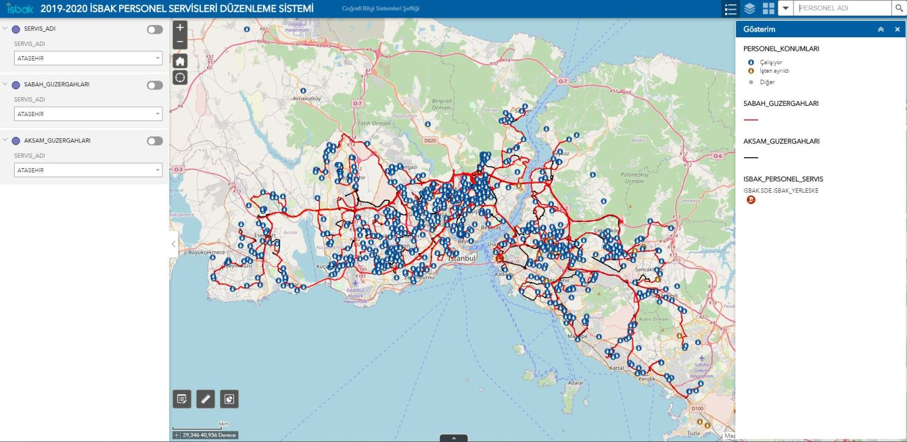
Web Sistem Görünümü
ALP İNŞAAT
Harita Mühendisi (Ağustos 2016 – Eylül 2016)
Zeminaltı Otopark ve Çevre Düzenleme İnşaatı Piyalepaşa-Beyoğlu
İş kapsamında saha mühendisi ve harita mühendisi olarak, iş takibi, personel kontrolü ve hazırlanan projeye bağlı kot ve doğrultu uygulamalarının gerçekleştirilmesini sağladım.
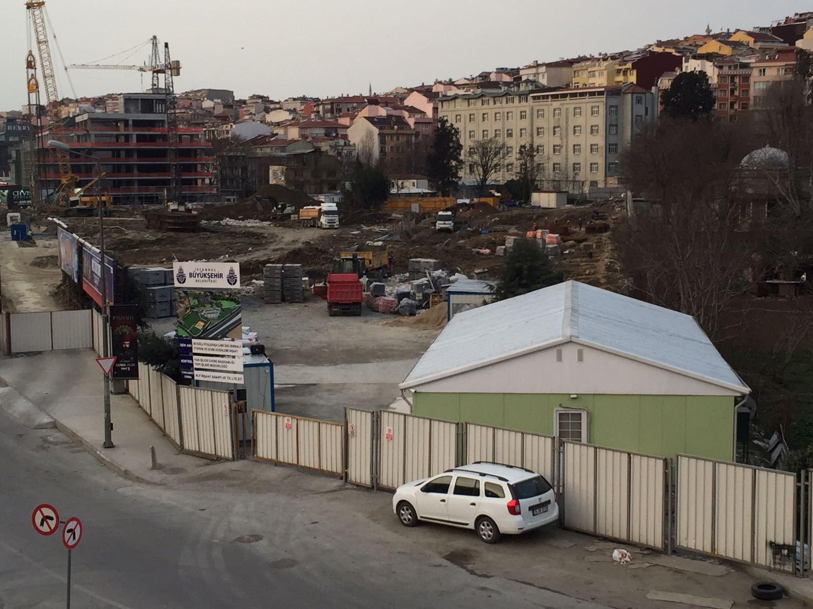
Otopark ve Çevre Düzenleme İnşaatı